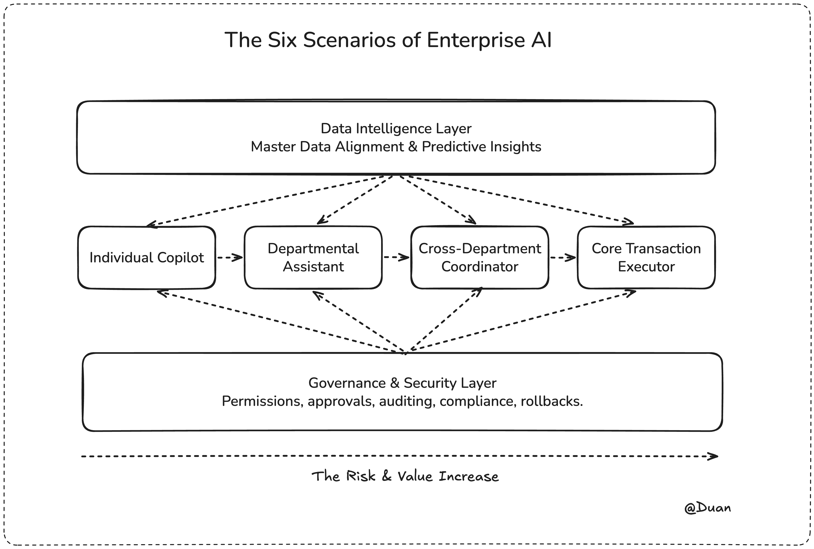
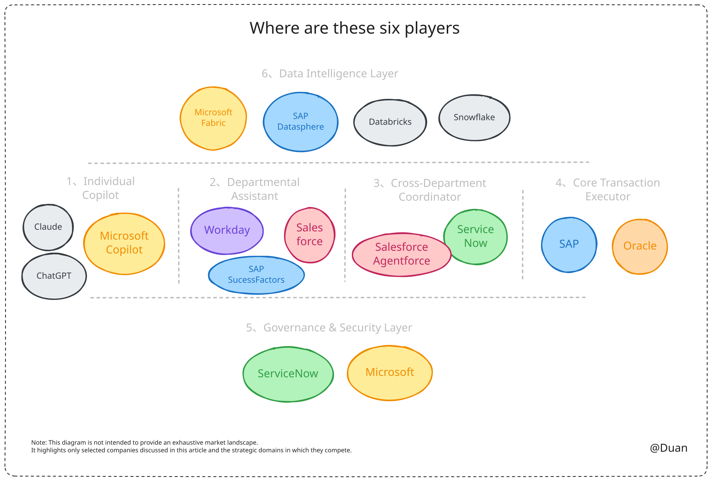
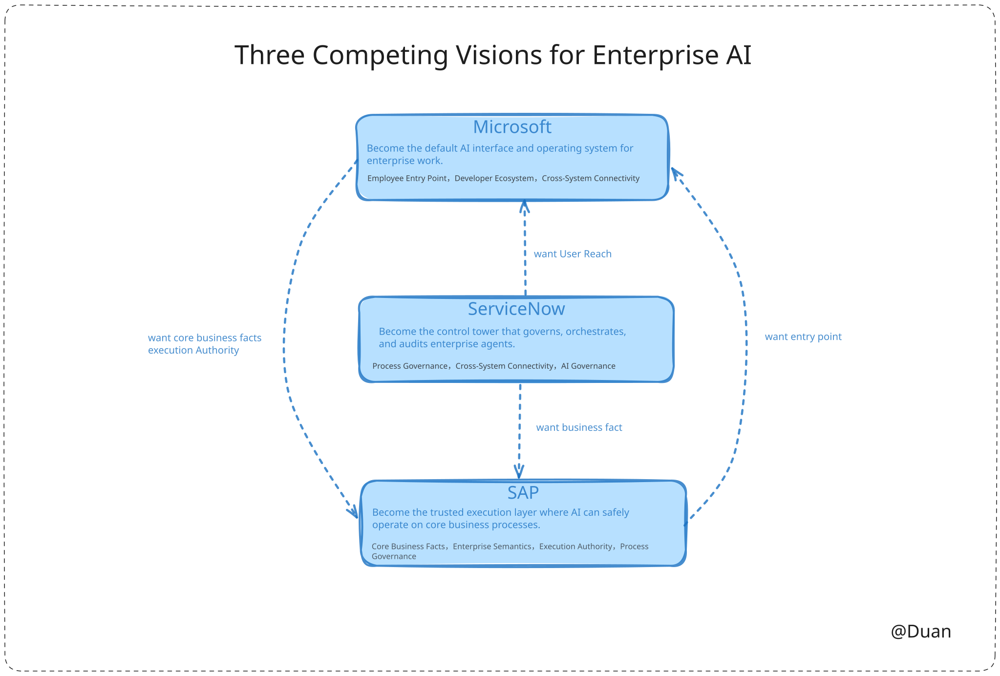

SAP, Microsoft, and ServiceNow Are All Building Enterprise AI: A Map of What They Are Really Competing For
What SAP, Microsoft, and ServiceNow are really competing for.
At the beginning of 2026, several enterprise software conferences suddenly seemed to tell the same story.
SAP talked about the Autonomous Enterprise. Microsoft talked about Copilot and agents. ServiceNow talked about an AI Control Tower. Salesforce talked about Agentforce. Oracle and Workday were also embedding AI agents deeper into their enterprise applications.
If you only listen to the vocabulary, they all appear to be saying the same thing: enterprises will have more AI, work will become more automated, and business processes will become smarter.
But are they really talking about the same thing?
Is a Copilot that summarizes a meeting the same kind of AI as an SAP agent that handles a procurement exception?
Do a customer service agent, an HR agent, a finance closing agent, and a cross-system workflow agent carry the same value, risk, and control logic?
This article is not another list of product announcements. It is trying to answer a more basic question:
When all these major vendors say they are building enterprise AI, what position are they trying to occupy inside the enterprise? Which positions are more likely to create value? Which ones are closer to long-term commercial control? Who is sitting at the stronger table?
To answer that, we will follow a chain of reasoning:
- Start from demand. What are the common entry points for enterprise AI?
- Place the players on the map. Where does each vendor naturally stand?
- Judge the value of each position. Which positions matter more in the current AI competition?
- Analyze the strategic hand. If each vendor's AI narrative is to become real, what resources does it need? What cards does it already hold? Which missing cards are in someone else's hand? Which parts are feasible, which require specific conditions, and which are genuinely difficult?
- Synthesize it into a market structure. Where is enterprise AI actually being contested, which players occupy each area, and who is closer to long-term control?
The point is not to tell you who has already won. The point is to give you a tool for judging the next enterprise AI story you hear.
1. The Main Entry Points for Enterprise AI
Enterprises do not "adopt AI" in the abstract. The real situation is always more specific: someone uses AI in email, someone uses AI in customer service, someone experiments with AI in finance. All of these are called enterprise AI, but their risk levels are completely different.
That risk level determines the entry requirements, implementation speed, and long-term value of each position.
Start With Risk
We can arrange the depth of AI's contact with enterprise work into four positions, from lowest to highest risk.
Position 1: Helping one person work.
The risk is close to zero.
You sit in front of a computer writing emails, joining meetings, drafting documents, organizing spreadsheets, or looking up information. AI sits beside you as a tool. It drafts, summarizes, extracts, and organizes. You remain the main actor and decision-maker. If AI writes something wrong, you edit it.
Position 2: Helping one department work.
The risk is low and measurable.
AI enters sales, customer service, HR, or finance. It helps customer service reply automatically, helps sales generate follow-up suggestions, helps HR screen resumes, and helps finance detect anomalies. AI performs repetitive work inside one department and mainly handles that department's own data. If it makes a mistake, the error is usually contained within that department.
Position 3: Coordinating across departments.
The risk is medium.
An order gets stuck. AI needs to check customer information in CRM, inventory in ERP, credit limits in finance, and delivery status in logistics. Then it needs to decide who should handle the issue, whether it should be escalated, and whether an approval process should be triggered.
At this point, AI is working across systems. It passes signals and coordinates processes. If it fails, the result is often an efficiency loss, such as an order that remains unresolved. But it has not yet directly changed the real state of business data.
Position 4: Directly touching core transaction data.
This is the highest-risk position.
AI is no longer just suggesting or coordinating. It starts to execute actions: creating purchase orders, releasing payments, matching invoices, adjusting inventory, or updating employee master data.
These actions directly change the operating state of the enterprise. If something goes wrong, money may leave the company, goods may be shipped incorrectly, or the audit may fail. This is not a user experience problem. It is an operational incident.
To Go Deeper, AI Needs Two Additional Conditions
The first condition: AI needs to understand the enterprise's data language.
When AI enters cross-department coordination and core transactions, it cannot read data from only one system.
It needs to understand that an "account" in CRM, a "customer" in ERP, and a "debtor" in finance may refer to the same business object.
It also needs to connect data from multiple systems, such as inventory trends, supplier risk, and order anomalies, and then generate forecasts or analysis.
This is the data intelligence layer. It does two things:
- Master data alignment, or the semantic layer: helping AI understand the enterprise's data language and establish shared business meaning across systems.
- Prediction and insight, or the analytics layer: aggregating cross-system data for dashboards, anomaly detection, and trend forecasting.
This layer does not directly create the value of AI action. But it gives other agents, such as process orchestration agents and core execution agents, the data foundation they need. Without this layer, AI is blind in cross-system scenarios.
The second condition: the enterprise must dare to let AI act.
When AI moves from suggestion to execution, the enterprise has to answer several questions. Who authorized it? What data can it access? What action did it perform? Who is accountable if something goes wrong? How can it be stopped?
This is the governance and security layer: permissions, approvals, audit trails, rollback, accountability, and compliance. It is not one specific AI use case. It is the entry requirement for any AI that wants to move into execution.
The Complete Enterprise AI Map

The meaning of this map is simple: enterprise AI is not one market. It is four execution positions plus two foundational layers. Each position has a different value logic, and each foundation requires different capabilities. They should not be discussed as one thing.
2. Who Are the Players, and Where Do They Stand?
Now that we have the map, we can place the players inside it.
The Main Players
In the German enterprise software market, six major vendors are especially worth watching in the AI narrative: SAP, Microsoft, ServiceNow, Salesforce, Oracle, and Workday.
They are not moving in the same direction, and they are not fighting for exactly the same thing. So we need one distinction first.
Platform Players vs. Scenario Players
Platform players are not merely trying to optimize one department with AI. They want to become enterprise AI infrastructure. They want to control where AI runs, who governs it, and what it is allowed to execute. If their systems are removed, core business processes may get stuck.
Scenario players use AI to improve efficiency in a specific business area, such as customer revenue, human capital management, or a particular business domain. If their systems are removed, the enterprise can still operate, but efficiency declines.
Because this article asks who is competing for process execution rights, platform players are the main characters. Scenario players still matter, but we can locate them more quickly.
The Three Platform Players
SAP: starting from core execution.
SAP's AI narrative is built around the Autonomous Enterprise. It uses Joule, Knowledge Graph, and Business Semantics to support controlled process execution.
If we map these terms to SAP's native position, the picture becomes clear. SAP's native position is ERP: procurement, finance, supply chain, manufacturing, and inventory.
SAP's original advantage is not the entry point, nor usage frequency. Its advantage is that it holds many of the enterprise's core transaction facts. Where is the order? How much inventory is available? Who is the supplier? SAP is often the default answer.
In plain language, SAP's AI narrative says: let AI directly touch these core business objects under controlled conditions.
On the four-layer map, SAP's main battlefield is core execution, while it also extends upward into the data intelligence layer. The governance and security layer is also natural for SAP, because ERP permissions and audit controls have accumulated over decades.
Microsoft: starting from the entry point.
Microsoft's AI narrative is built around Copilot: Microsoft 365 Copilot, Copilot Studio, Copilot for Sales and Service, and the cross-data intelligence layer called Microsoft IQ.
Its native position is the work entry point: Outlook, Teams, Office, Azure, and Entra. When employees start their day, they usually do not open a business system first. They open the Microsoft suite. Microsoft's greatest asset is not the depth of a business process. It is where people work every day.
In plain language: Microsoft wants AI to become the default work interface for employees.
On the four-layer map, Microsoft's main battlefield is the personal assistant layer. It expands into departmental tasks and also reaches upward into the data intelligence layer. Governance and security are also strengths, built on Entra identity and permission infrastructure.
Microsoft's advantage is that the entry barrier at the interface layer is almost zero. But to move to the right side of the map, it needs to connect with business systems such as SAP and ServiceNow. It is farther away from core execution than SAP is.
ServiceNow: starting from process orchestration.
ServiceNow's AI narrative is built around the AI Control Tower. Its core claim is that when an enterprise has dozens or hundreds of AI agents, it needs one place to create, approve, monitor, audit, and shut them down. The message is not simply "we can also build agents." It is "someone needs to manage all these agents."
Its native position is ITSM and employee services. When a ticket comes in, who handles it, who approves it, who escalates it, and who closes it? These are ServiceNow's familiar workflows.
ServiceNow does not own the core transaction records. But it understands how a request moves through different systems inside an enterprise.
On the four-layer map, ServiceNow's main battlefield is process orchestration, and it extends upward into governance and security. The more agents exist, the more valuable its position becomes.
Oracle also stands on the core execution side, but it takes a different route. Through Fusion Agentic Applications, Oracle connects database, application cloud, and OCI into a full-stack AI agent story. Strategically, this directly competes with SAP's route.
But in large German enterprises, SAP's ERP installed base is very deep. Oracle's core execution narrative is more naturally realized inside its own application cloud customer base. In Germany, it is strategically a platform player, but its practical influence is constrained by the installed base.
Locating the Scenario Players
Salesforce enters from departmental tasks, especially sales, service, and marketing. Its core narrative is Agentforce plus Data Cloud. In plain language: create visible ROI in the customer front office. Its ceiling is constrained by the difficulty of connecting to back-office transactions such as orders, inventory, and refunds.
Workday also enters from departmental tasks, especially HCM. Its core narrative is Illuminate plus Agent System of Record. In plain language: optimize AI around people and organizational data. In large German enterprises, it is often covered or constrained by SAP SuccessFactors.
All six players occupy different positions. A single positioning view makes the pattern easier to see:

Microsoft stands on the left at the work entry point. Salesforce and Workday stand in departmental task layers. ServiceNow sits in process orchestration and extends into governance. SAP and Oracle stand on the right at core execution. They do not start from the same place, but all of them are using AI to push their original position further.
3. How Do We Judge Which Position Is More Valuable?
Once the map and the players are in place, how do we compare the value of their positions?
We Need a Better Framework
If we rank them by "who monetizes first," we fall into a trap. The entry layer spreads fastest and can generate short-term revenue quickly. The core execution layer scales much more slowly. Ranking by short-term ROI can misread the long-term structure.
Looking at "who is most irreplaceable" is closer to the truth, but it misses another key factor: even if you are important, how much is the enterprise willing to pay you?
The value of a position ultimately depends on the product of two things:
Profit Pool x Switching Cost
Profit pool: How much is an enterprise willing to pay for AI in this position?
- Directly connected to sales performance: the enterprise is willing to pay more.
- Improves personal productivity but does not directly tie to performance: the enterprise may pay, but not much.
- Solves must-have problems such as compliance and audit: the enterprise is willing to pay, but budgets may be constrained.
Switching cost, or difficulty of replacement: How hard is it for someone else to replace you?
- Data exclusivity, integration depth, migration cost, ecosystem lock-in, and accumulated trust.
By this standard, different positions have different value logic.
Personal assistants diffuse the fastest, but pricing power is still unstable. Departmental tasks are easier to prove through ROI. Process orchestration becomes more valuable as the number of agents grows. Core execution is the hardest to land, but it has the highest long-term value.
Data intelligence and governance/security are not single scenarios. They are amplifiers for deeper enterprise AI: the former helps AI understand the enterprise; the latter makes enterprises willing to authorize AI to act.
The upper-right corner, where profit pool is large and moat is deep, has the highest long-term commercial value.
Position by Position
SAP sits deepest in core execution, with the strongest moat, but monetization will take the longest.
Microsoft diffuses fastest through the entry layer, but its pricing power and execution-layer control still need to be proven.
ServiceNow becomes more valuable as process orchestration and agent governance become more important.
Salesforce has the strongest cash-flow logic in customer revenue processes, but needs back-office connections to enter the larger map.
Workday is stable in HCM, but remains more of a high-value local player.
4. Can Their Narratives Actually Become Real?
With the map and position valuation in place, we can move to the final layer: when each vendor's AI narrative is placed against the market and competitors' moves, which parts are feasible, which require specific conditions, and which may not hold?
SAP: Trying to Become the Controlled Core Execution Layer
Narrative: Autonomous Enterprise. Let AI touch core business objects such as orders, invoices, and inventory under controlled conditions.
Cards SAP holds and cards SAP lacks:
- Holds: core transaction data, including orders, invoices, inventory, and suppliers. This is the scarcest asset.
- Holds: enterprise semantic layer through Knowledge Graph, understanding relationships among business objects.
- Holds: governance and audit infrastructure, plus customer trust.
- Lacks: the daily employee entry point, which is in Microsoft's hands.
- Lacks: cross-system connection power. The front office sits with Salesforce, and workflow sits with ServiceNow.
- Lacks: a culture of fast iteration.
Feasibility:
- Feasible: the baseline of "AI touching core business objects" is realistic. No other company can replace SAP's core transaction data in many enterprises.
- Conditional: becoming the default enterprise AI execution layer requires SAP to fill gaps in entry point and cross-system connectivity. It can do this through open APIs, deep integrations, and acquisitions, but it will take time.
- Difficult: for enterprises that are not strongly bound to SAP, SAP needs to borrow Microsoft's entry point to reach users. Employees will not naturally open SAP just to use AI. But among SAP installed-base customers, especially large German enterprises, employees using AI through Fiori, SAP Start, or Joule is a real scenario. The entry problem matters less inside the installed base, but it is a structural obstacle for new customer acquisition.
Judgment: the core base is solid (high), but expansion is limited by speed and entry-point dependency (medium-low).
Microsoft: Trying to Become the Default AI Entry Point and Horizontal Agent Platform
Narrative: Copilot. Make AI the employee's work interface, and use Copilot Studio to become the enterprise agent platform.
Cards Microsoft holds and cards Microsoft lacks:
- Holds: employee usage frequency. People work every day in Outlook, Teams, and Office.
- Holds: identity security through Entra, cloud through Azure, and a developer ecosystem through GitHub, VS Code, and Copilot Studio.
- Holds: data platforms such as Fabric and Purview, plus pricing leverage through Office 365 subscriptions.
- Lacks: core business facts, which are in SAP's hands.
- Lacks: process execution governance authority, where ServiceNow is strong.
- Lacks: deep semantics in specific business domains, especially where SAP dominates.
Microsoft's developer ecosystem deserves its own note.
GitHub, VS Code, and Copilot Studio cover not only enterprise IT departments, but also independent developers around the world. At the entry and departmental task layers, this is a moat other vendors cannot easily match.
The advantage is concrete: employees can find agent templates themselves, and IT departments can quickly deploy preconfigured workflows.
But once we move into process orchestration and core execution, the value of the third-party ecosystem declines sharply. Enterprises will not allow community-developed agents to touch payments and inventory.
Feasibility:
- Feasible: AI becoming the default work entry point is almost certain. The entry barrier at the interface layer is close to zero.
- Conditional: becoming a horizontal agent platform depends on whether Microsoft can connect deeply to SAP and ServiceNow data and processes. Microsoft can borrow data through APIs and integrations, but whether the other side wants to open up is the real question. SAP has little incentive to let Microsoft become its AI entry point.
- Difficult: giving AI execution authority over core transaction data. There is not yet a public customer case showing Microsoft agents directly operating core financial or supply chain processes. This gap may gradually narrow through deeper partnerships, and SAP and Microsoft have explored agent-to-agent interoperability. But we should not assume the gap will close automatically, because SAP has limited incentive to open execution authority. If core facts and permissions remain with SAP, Microsoft's agent platform is an interface built on someone else's foundation. The entry point has value, but the entry point is not control.
Judgment: the entry point will work (high), the agent platform depends on integration depth (medium), and execution authority is still unproven (low to medium, depending on partnership depth). The profit pool remains uncertain.
ServiceNow: Trying to Become the Control Tower for Agent Governance
Narrative: AI Control Tower. When enterprises have dozens or hundreds of agents, someone needs to create, approve, monitor, audit, and shut them down.
Cards ServiceNow holds and cards ServiceNow lacks:
- Holds: the full request-to-approval-to-audit chain, naturally suited to managing agents.
- Holds: ITSM, employee services, and cross-system workflow visibility.
- Holds: a position that becomes more valuable as the number of agents grows.
- Lacks: core transaction records, which are in SAP's hands.
- Lacks: user stickiness at the entry layer.
- Lacks: definition of agent identity, roles, and budget, an area Workday is also contesting. Public information on Workday is still limited, so this judgment has medium confidence and should be tracked.
Feasibility:
- Feasible: managing agents. When an enterprise moves from 10 agents to 1,000 agents, someone has to govern them. This is a real need.
- Conditional: cross-system agent governance requires deep connection to SAP's core transaction data. This depends on how open SAP is willing to be.
- Difficult: competing with Workday for the right to define agent identity. Workday's Agent System of Record extends HCM logic into agents. If it succeeds, the two companies will directly compete over who decides what an agent is allowed to do.
Among the three platform players, ServiceNow has the clearest short-term path over the next two to three years. It does not need to take cards away from someone else. It only needs the trend of agent governance becoming a must-have to become real.
But over a five-year horizon, the certainty of this trend declines, because Workday and Microsoft may enter the same market in parallel.
ServiceNow's core challenge is not whether the narrative can work. It is whether ServiceNow can define the governance layer standard before Workday or Microsoft absorbs part of the market.
Judgment: the short-term path is clear (high), long-term uncertainty rises (medium), dependency on SAP openness is material (medium), and Workday is also contesting the space (medium). The position is clearly rising.
Strategic Hand Summary

There is one structural tension running through the whole map: the more valuable the core execution position is, the harder it is to obtain execution authorization. This is why Microsoft moves fastest but is more fragile, while SAP moves slowest but is more deeply anchored. Do not use "who runs first" to judge "who can run to the end."
There is also a Germany-specific factor: the EU AI Act will be implemented in stages from August 2026, creating explicit compliance requirements for high-risk AI execution scenarios.
This will raise the entry barrier for the execution layer. In the short term, it favors SAP, because its compliance system is the most mature. In the medium term, it favors ServiceNow, because governance platforms become more important. It has less direct impact on Microsoft's entry layer.
5. Market Structure
At this point, we can fold the analysis back in layers.
The first layer is how deeply AI touches the business.
If AI only helps people write emails, join meetings, or prepare documents, the entry point matters most. If AI enters sales, service, HR, or finance departments, short-term ROI matters most. If AI starts moving work across systems, workflow and governance become important. If AI directly touches orders, payments, inventory, or invoices, core execution rights become the real issue.
The second layer is each player's native system position.
Microsoft is closest to employees, so it is best positioned to own the entry layer. Salesforce and Workday are closest to departmental business processes, so they can prove value in customer revenue and HCM scenarios. ServiceNow is closest to requests, approvals, routing, and audit trails, so it naturally moves toward process orchestration and agent governance. SAP and Oracle are closest to core transaction systems, so they are closer to true business execution.
The third layer is the value judgment.
The entry layer diffuses fastest, but it does not automatically own control. Departmental tasks are easiest to justify through ROI, but they usually remain local. Process orchestration becomes more important as the number of agents grows. Core execution is the hardest to land, but once enterprises are willing to authorize it, it has the highest long-term value and replacement barrier.
So German enterprise AI is unlikely to become a winner-takes-all market. It is more likely to become a layered structure:
- Entry layer: Microsoft is strongest.
- Departmental task layer: Salesforce, Workday, and Microsoft all have opportunities.
- Process orchestration layer: ServiceNow is best positioned.
- Core execution layer: SAP and Oracle are closer.
- Data intelligence layer: SAP, Microsoft, Oracle, Salesforce, and data platforms will all compete.
- Governance and security layer: ServiceNow, Microsoft, and SAP will all compete.
This brings us back to the opening question. These companies are not competing in one generic "AI assistant" market. Each is trying to move from its native position into deeper, higher-value business processes.
The main line becomes:
Whoever can be authorized by enterprises to enter high-value processes under controlled conditions, and actually execute actions there, is closer to long-term control in enterprise AI.
Takeaways
After reading this, the next time you see a new enterprise AI narrative, ask these questions in order: